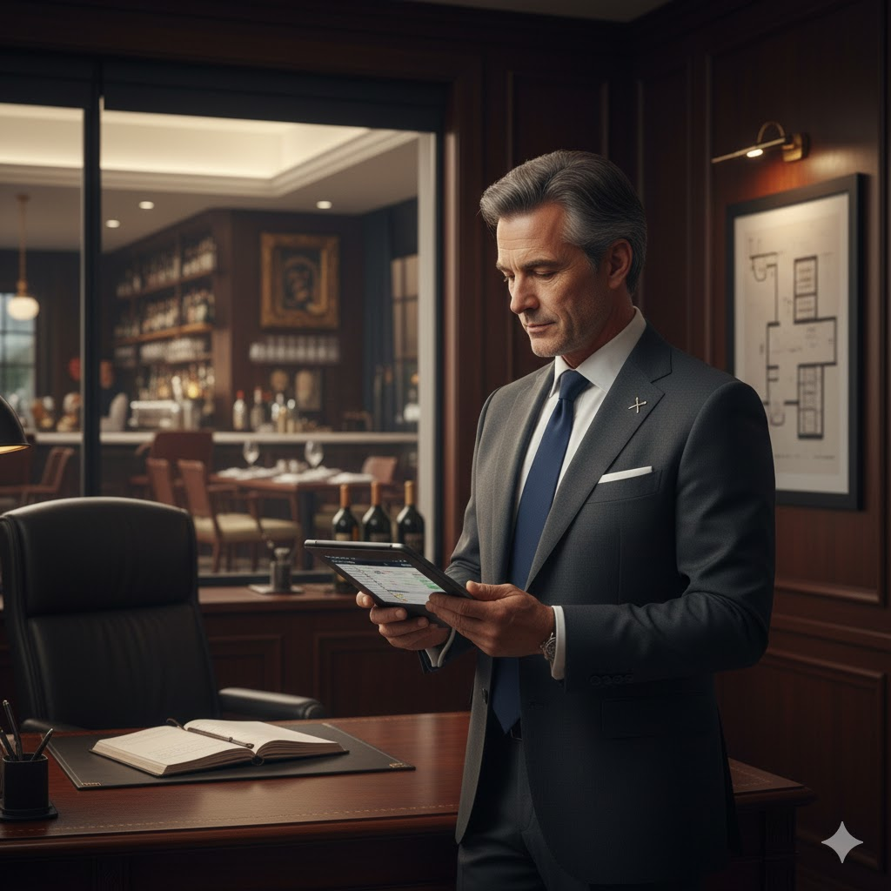
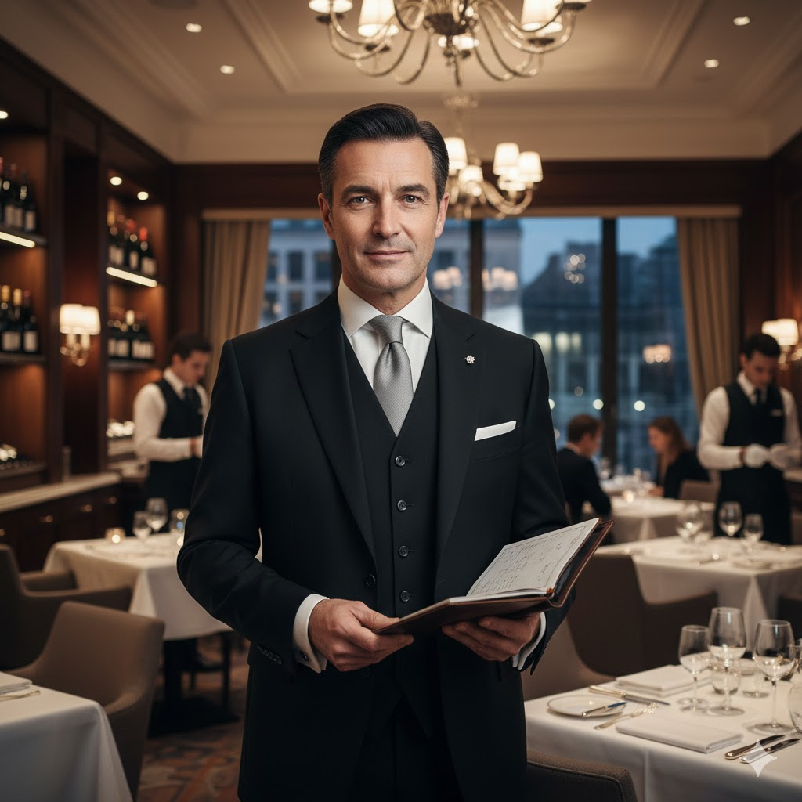
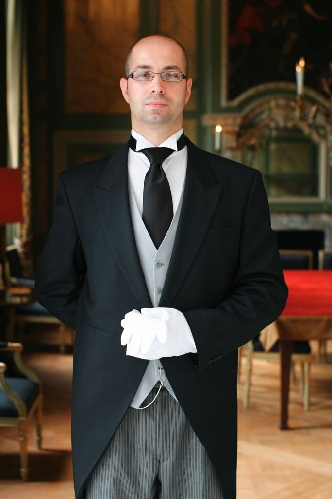
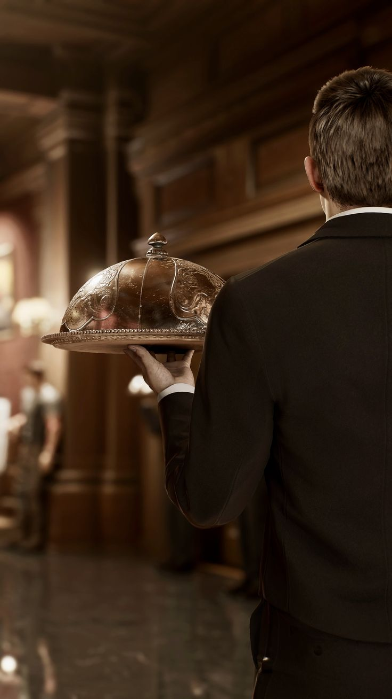
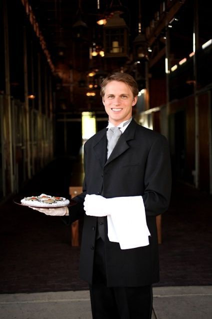
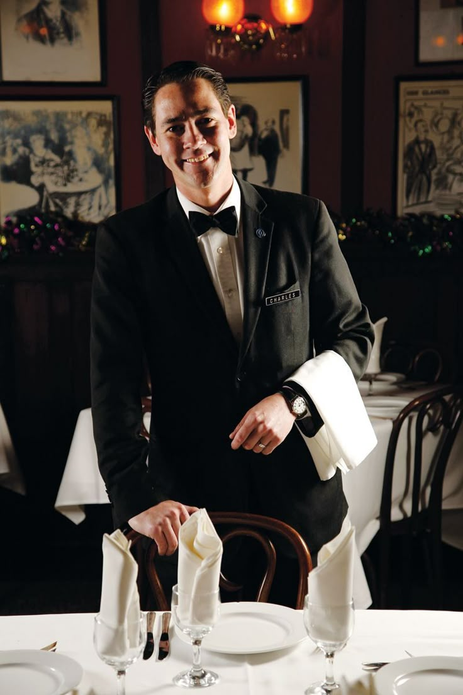
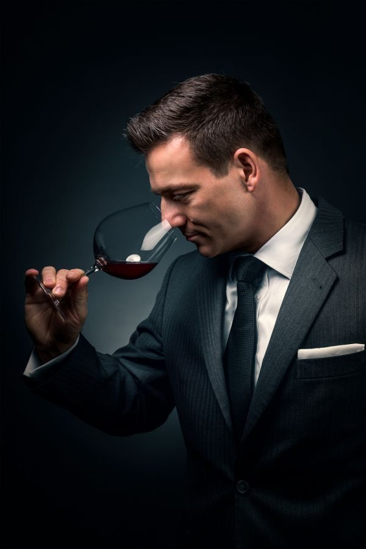
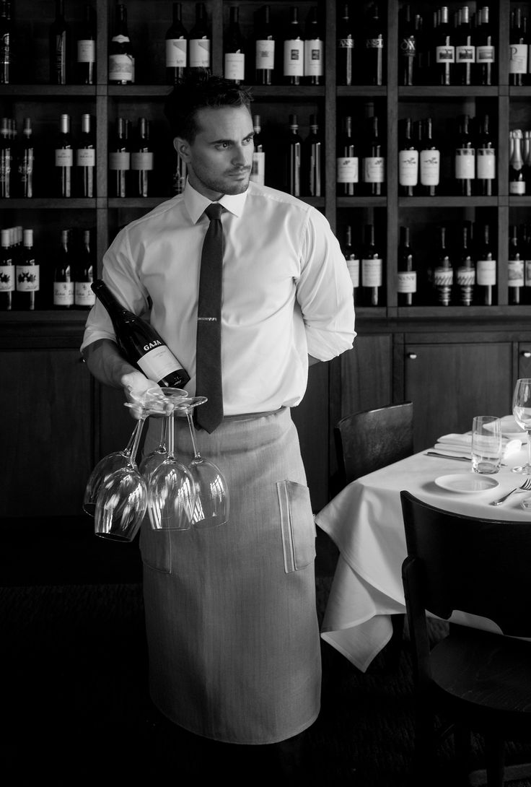
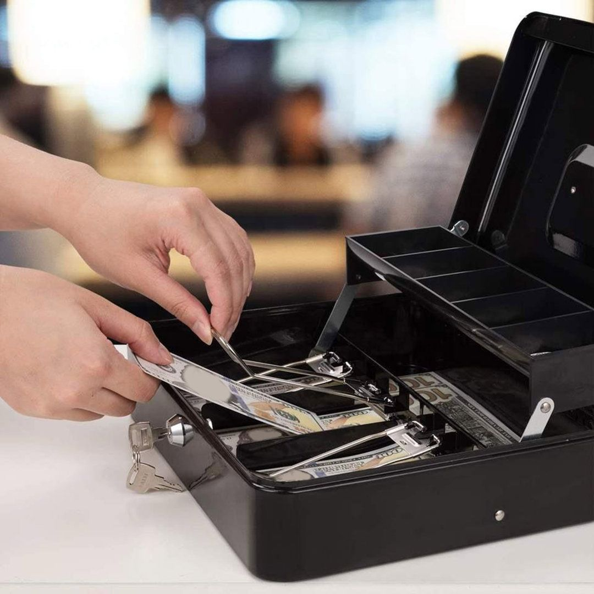
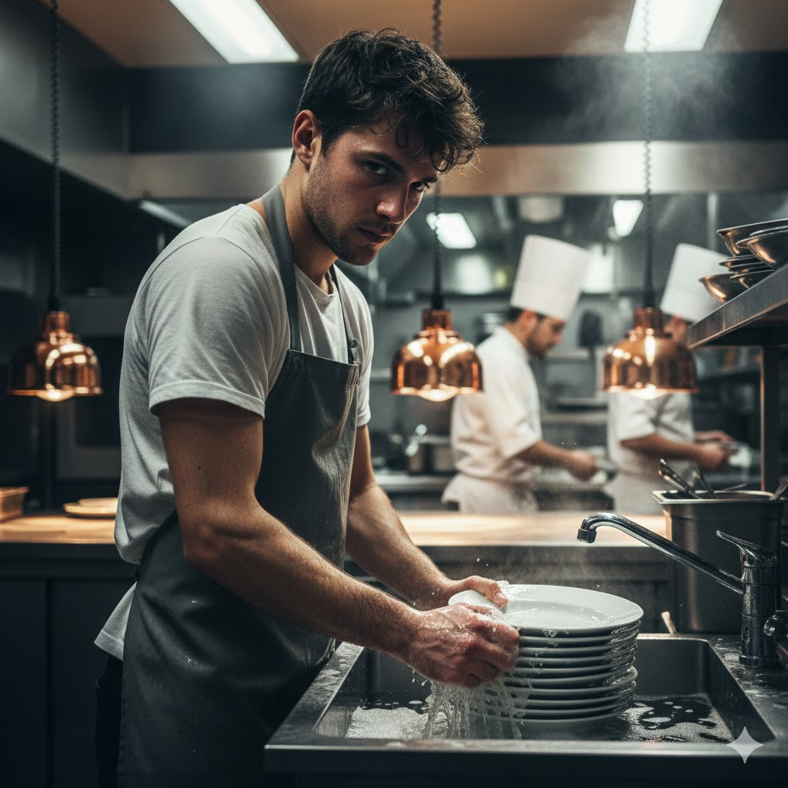

Directeur de la restauration (F&B)
- * Est responsable de l’activité « restauration dans son ensemble », gère les secteurs restaurant et cuisine ainsi que le room service, snack bar, bar.
- * Gère le personnel et organise le travail.
- * Définit les objectifs commerciaux
- * Est le lien direct avec les autres services de l’établissement (service commercial, service des étages dans les hôtels, réception, etc)
- * Planifie et organise les manifestations spéciales (banquets, séminaires, colloques, etc).
Directeur de salle & 1er Maître d’hôtel
- * Un rôle plus restreint que le directeur de la restauration.
- * Il ne supervise que l’activité de service restaurant.
- * Encadre le personnel de restaurant et réparti les tâches de travail.
- * Gère les réservations des tables.
- * Accueille et conseille les clients.
- * Prend les commandes des VIP (Very Important Persone).
- * Gère l’ensemble des approvisionnements du restaurant et de ses annexes (consommables, décorations florales, matériel, produits alimentaires).

Maître d’hôtel
- * Est sous les ordres du directeur du restaurant ou du premier maître d’hôtel et applique ses consignes.
- * Remplace le directeur de restaurant durant ses absences.
- * Réparti les tâches de travail journalières et veille à leur bon déroulement.
- * Gère les réservations.
- * Accueille et conseille les clients.
- * Prend les commandes des clients.
- * Gère la facturation lorsqu’il n’y a pas de caissier (réalisation de la facture et encaissement).
- * Raccompagne les clients de congé pour effectuer la prise.
Maître d’hôtel de Carré
- * Fonction quasiment inexistante de nos jours.
- * Est sous les ordres directs de 1er Maître d’hôtel
- * Est responsable d’un « carré » de la salle de restaurant et le gère durant la mise en place, le service et les travaux de fin de POSTES service.


Trancheur
- * Est sous les ordres directs du directeur de restaurant ou du 1er Maître d’hôtel.
- * Est responsable de l’activité « tranchage » au travers du matériel de tranche (mise en place, tranchage utilisation et entretien), de la prestation durant le service (organisation)
Chef de brigade
- * Poste n’existant que dans les grandes brigades de restaurant.
- * Il est sous les ordres directs du Maître d’hôtel.
- * Remplace le maître d’hôtel durant son absence.
- * Distribue les tâches de mise en place aux membres de la brigade sous ses ordres (chef de rang et ½ chef de rang, commis).
- * Participe aux travaux de la mise en place.
- * Gère l’organisation et assure le service d’un rang avec les commis (contrôle de la mise en place, prise de commande, service des mets, présente la facture aux clients).
- * Raccompagne les clients jusqu’au vestiaire
- * Procède aux travaux de fin de service etc..


Chef de rang
- * Est sous les ordres du Maître d’hôtel et du chef de brigade.
- * Participe aux travaux de mise en place.
- * Gère l’organisation et assure le service d’un rang avec les commis (de suite et débarrasseurs).
- * Procède aux travaux de fin de service.
½ Chef de rang
- * C’est le poste intermédiaire entre le commis et le chef de rang.
- * Poste n’existant que dans les grandes brigades.
- * Il a le même rôle qu’un chef de rang bien qu’il soit sous les ordres de ce dernier.

Commis de Suite
- * Est sous les ordres directs du chef ou ½ chef de rang .
- * Prépare la mise en place avant le service (nettoyage des locaux et entretien du matériel, mise en place des tables).
- * Assure une aide matérielle au chef de rang en faisant liaison entre la console et la table des clients (apporte et débarrasse les plats, le matériel de service).
- * Assure le service des boissons ...
Commis dé barrasseur
- * Participe aux activités de nettoyage, d’entretien du matériel, de mise en place des tables du restaurant et des locaux annexes sous les ordres du chef de rang.
- * Débarrasse les consoles et assure la liaison des plats entre la cuisine et la table des clients sous les ordres du chef de rang.


Barman / Barmaid ou Barlady
- * Assure le nettoyage et l’entretien des locaux et du matériel du bar et de son office.
- * Réalise la mise en place matérielle etalimentairedu bar.
- * Gère les approvisionnements et les stocks des produits .
- * Conseille la clientèle, prend les commandes et assure leservice des boissons du bar et des cigares.
- * Gère les encaissements de son secteur.
Chef sommelier
- * Est sous les ordres directs du directeur de restaurant.
- * Gère son secteur au travers:du personnel (planning de travail, repos hebdomadaires, vacances, recrutement), du matériel (matériel de service tels que les paniers, stand à vin, et le matériel client tels que la verrerie)approvisionnements et des stocks des boissons.
- * Conseille la clientèle, prend les commandes des boissons et en assure le service etc...


Sommelier
- * Est sous les ordres directs du chef sommelier ou du directeur du restaurant.
- * Assure le nettoyage, l’entretien et la mise en place de la cave centrale et du jour, de son office et du matériel spécifique afférant au service (verrerie, stand à vin, paniers, seaux à vins, cartes des vins).
- * Conseille la clientèle, prend les commandes des boissons et en assure le service...
Caissier
- * Est sous les ordres directs du directeur de restaurant ou du maître d’hôtel.
- * Assure les encaissements clients (préparation des factures, édition et encaissements)...


Plongeur (plonge vaisselle) et (plonge verrerie)
- * Est sous les ordres directs du directeur du restaurant ou du maître d’hôtel .
- * Asssure la mise en place de son poste de travail et son entretien en fin de service (Vide et nettoie la machine en fin de chaque service)
- * Asssure le nettoyage de la vaisselle et / ou de la verrerie
- * ère son stock de produits lessiviels et de linge (essuie-verres, torchons)...
Hôtesse d’accueil
- * Est sous les ordres du directeur de restaurant ou du maître d’hôtel.
- * Assure l’accueil des clients en s’occupant :
- Du vestiaire des clients.
- De l’accompagnement vers la salle du restaurant
- * Placement des clients à leur table surtout les tables réservées.
TENUE PROFESSIONNEL DE SERVEUR.